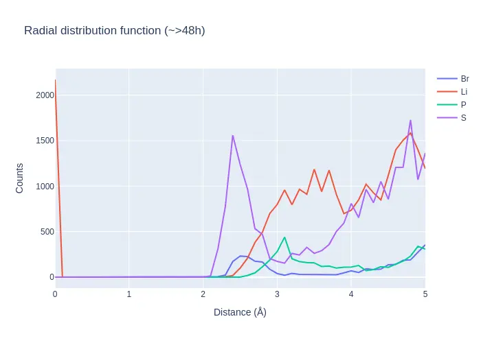
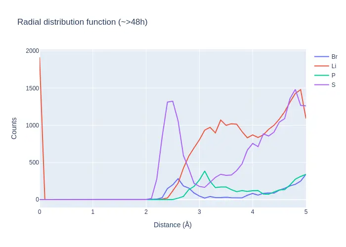
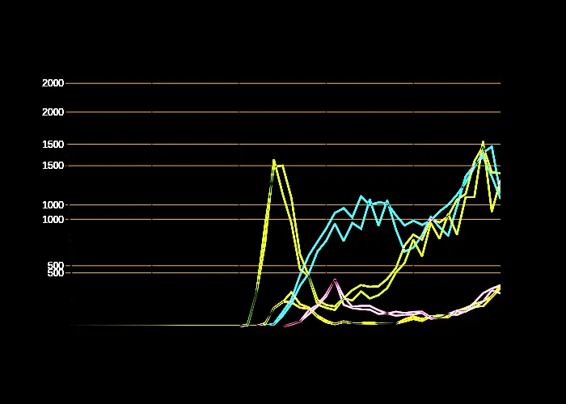

Regression testing Plotly plots with Pytest
2024-05-29
I have long been using matplotlib to generate plots for my data. Matplotlib always serves me well for producing publication-style, static plots. For regression testing the plots produced by matplotlib, they provide this very useful image comparison decorator (see link for how it works). In short:
from matplotlib.testing.decorators import image_comparison
@image_comparison(baseline_images=['your_plot'])
def test_matplotlib_plot():
your_plotting_code_here()The decorator automatically picks up new figure objects, and compares these with the expected plots through direct image comparison. If the test fails, the difference between the plots is displayed, making it convenient to visualize the difference to help with debugging.
Regression testing in Plotly
For interactive plots that are better suited for online dashboards, we recently started using plotly a lot more. There I wanted something similar, but to my surprise, there is no documentation or infrastructure available for regression testing plots. This meant all of our plotly plots were untested. This gave us little confidence in the robustness of the plotting code, and meant that any bugs could go unnoticed for a while. To solve this, I ended up developing a function that mimicks the matplotlib way. It uses the same directories and image comparison algorithm.
|
{kind=link}

{kind=link}

{kind=link}

The visual comparison helps to identify where the problem lies.
Code
Below is the code that we use in one of my projects. See it in action here.
# helpers.py
from pathlib import Path
from matplotlib.testing.compare import compare_images
import inspect
from typing import Any
def assert_figures_similar(fig, *, name: str, ext: str = 'png', rms: float = 0.0):
"""Compare plotly figures and raise if different."""
# Ensure same font is used on different machines (local/CI)
fig.update_layout(
font_family='Arial',
title_font_family='Arial',
)
# Get path of caller
frame = inspect.stack()[1]
module = inspect.getmodule(frame[0])
modulepath = Path(module.__file__) # type: ignore
results_dir = Path() / 'result_images' / modulepath.stem
results_dir.mkdir(exist_ok=True, parents=True)
filename = f'{name}.{ext}'
actual = results_dir / filename
fig.write_image(actual)
expected_dir = modulepath.parent / 'baseline_images' / modulepath.stem
expected = expected_dir / filename
expected_link = results_dir / f'{name}-expected.{ext}'
if expected_link.exists():
expected_link.unlink()
expected_link.symlink_to(expected)
err: dict[str, Any] = compare_images(
expected=str(expected_link), actual=str(actual), tol=rms, in_decorator=True
) # type: ignore
if err:
for key in ('actual', 'expected', 'diff'):
err[key] = Path(err[key]).relative_to('.')
raise AssertionError(
(
'images not close (RMS {rms:.3f}):'
'\n\t{actual}\n\t{expected}\n\t{diff}'.format(**err)
)
)There is no decorator, but you can use it like this:
from helpers import assert_figures_similar
def test_plot():
fig = your_plotting_code_here()
assert_figures_similar(fig, name='name_of_plot', rms=0.5)My takeaways
- You can save plotly images using
fig.write_image('name_of_file.png')if you have the kaleido library installed. - The code uses the inspect module to get the filename of the caller.
- Make sure to force plotly to use the same fonts. Arial is a safe choice, because of its ubiquity. It is available on most operating systems, and also on the Github CI. Initially all my tests failed because the font was completely different between my development environment and the CI.
- There is a small deviation in rendering between my environment and the CI. These are invisible to the eye in the difference image, but enough to give up to 0.5 rms difference.
- I rely on the
compare_imagesfunction to do all the heavy lifting. My code only puts the images in the right place,compare_imagesdoes a file based compare and produces the difference. - The code for the matplotlib decorator is very clever. Essentially the contextmanager picks up any newly generated figures generated while it was active. There is a lot of code to make the decorator work seamlessly.